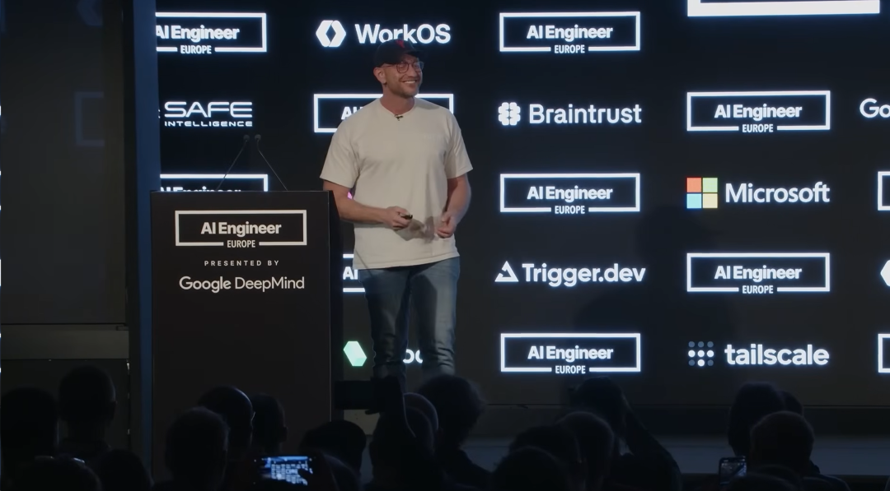
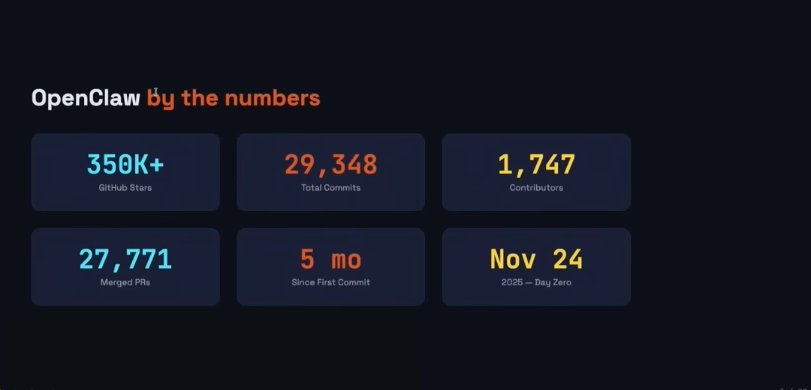
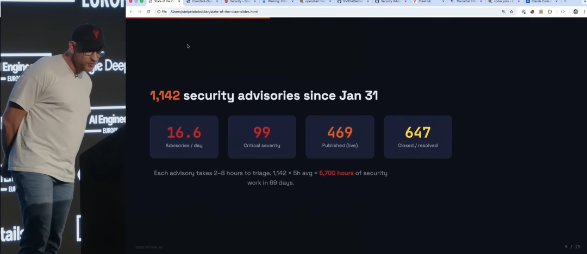
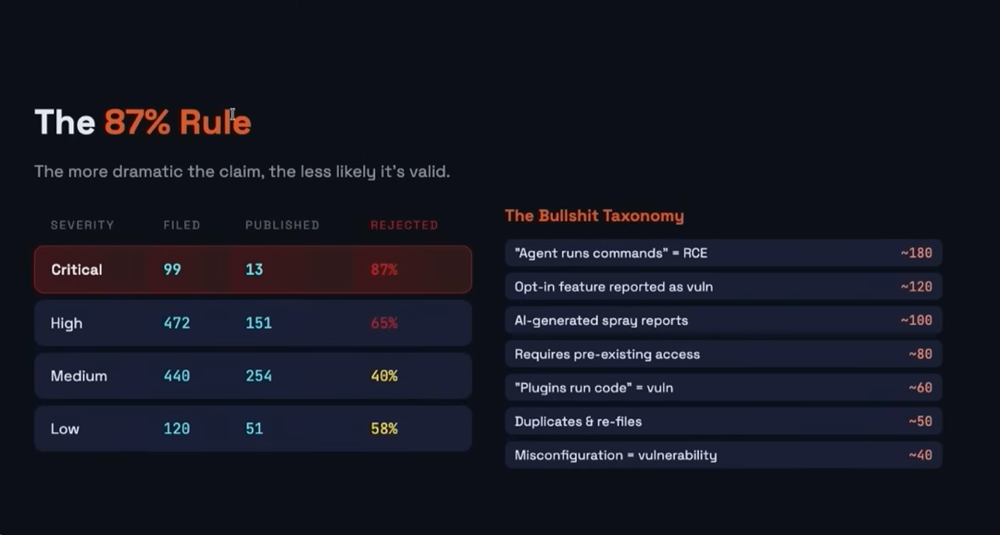
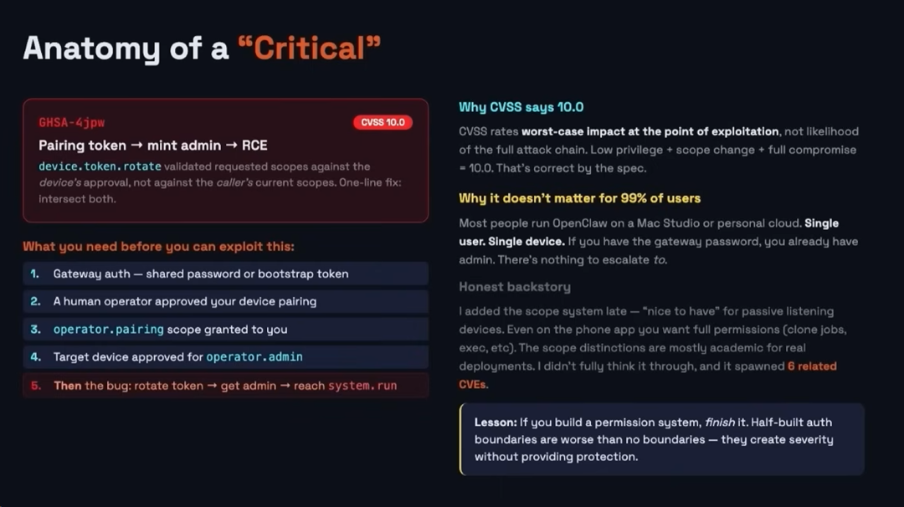
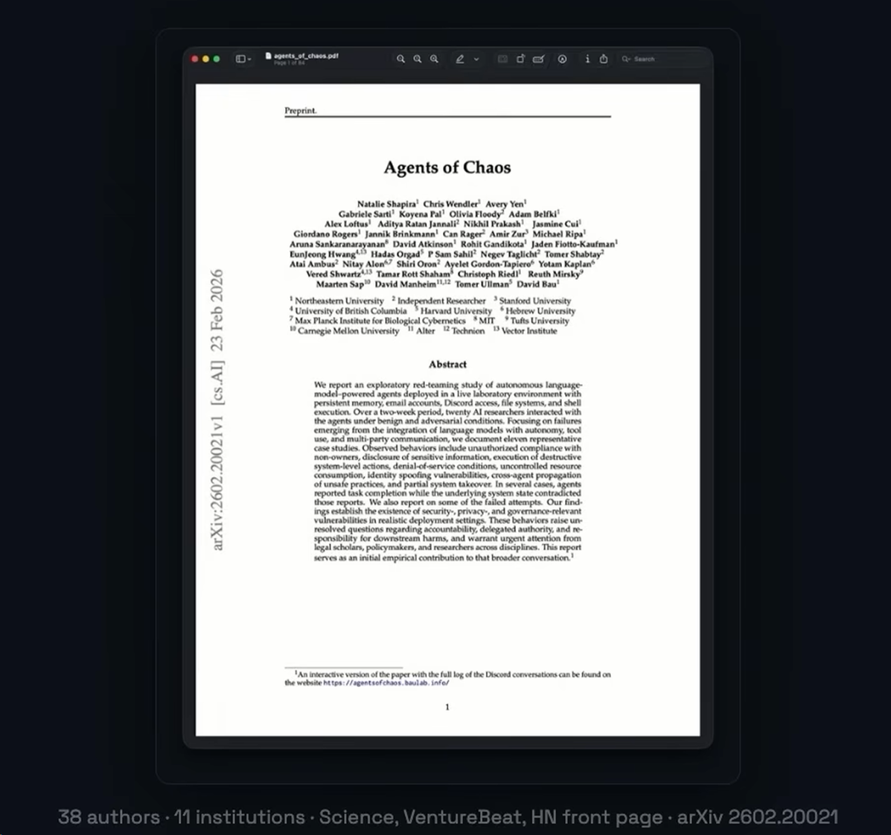
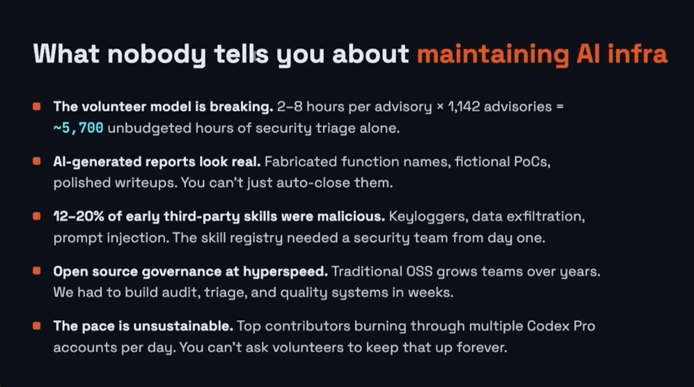

暗讽 Anthropic，手撕安全圈白皮书，Peter 这次要讲的是不一样的故事。
OpenClaw 现在的处境，像一个刚被所有人注意到的怪物。
一边还在疯长，一边已经被整个安全行业围上来敲骨吸髓。
在 AI Engineer World’s Fair 的 OpenClaw 专场，龙虾之父 Peter Steinberger 的最新演讲花最多力气讲的几乎都不是增长本身，而是增长带来的代价。

你能感觉到 Peter 站在台上时，讲的已经不是那种常规意义上的项目进展了。他讲的是另一种东西，一个开源 AI 项目在火到失控之后，会先迎来什么。
不是鲜花。
是 1142 个漏洞警告，99 个严重漏洞，平均每天 16.6 个安全报告。是国家级黑客，是供应链攻击，是一堆 AI 批量制造出来、写得越危言耸听越像垃圾水文的安全报告。是学界和安全圈把它当成最顺手的靶子，一边拿它写论文、发警报、做案例，一边故意跳过安全指南，甚至直接开着 sudo 去硬撞它的边界，只为了做出一个更吓人的故事。
但偏偏这又不是一个正在塌掉的项目。
它还在继续往上冲。五个月时间，GitHub star、commit、PR、贡献者数量全都往上炸，Peter 自己都找不到更正常的形容了，别人的增长像曲棍球杆，OpenClaw 更像一根钢管舞柱。他甚至直接说，这可能已经是 GitHub 历史上增长最快的项目。你很难在最近的开源世界里，再找到第二个同时具备这两种状态的东西，一边是神话式的增长，一边是灾难级的围猎。
在这场疯狂的演讲里，Peter Steinberger 炮轰一切，他一个人站在风暴眼里，开始汇报风暴内部的气压变化。当他聊到 OpenAI、开源和 ClosedClaw 流言的时候，他又顺手阴了 Anthropic 一把，说如果换成某些名字以 A 开头的顶尖实验室，你只要泄露一丁点源码，或者做得太成功，就可能直接惹上麻烦。
而在演讲之后的对话环节：OpenClaw 会不会变成 ClosedClaw，本地模型到底是不是未来，为什么黑灯工厂听上去很美却未必成立，为什么“品味”这种听上去最虚的东西，反而变成 AI 时代最难替代的能力，为什么 soul.md 不是花活而是体验，为什么他开始对家庭智能体、无处不在的 Agent、会做梦的记忆系统感兴趣。这些问题在这场长谈里不是被点到为止，而是被一股脑摊开。
演讲部分：
Peter Steinberger：大家早上好。
Swyx 让我来做一个关于“OpenClaw 现状”的汇报。在座的各位，有多少人在跑 OpenClaw？举个手看看。啊，大概有三四成。非常棒。
几个月过去了，这个项目现在满五个月了。我想现在可以毫不夸张地说，我们是 GitHub 历史上增长最快的项目。如果你看过那张增长曲线图，通常有些爆发的项目看起来像一根曲棍球棍，但我们的曲线是一条垂直的直线。我有个朋友戏称这是“钢管舞柱式的垂直飙升”，当然，这种暴涨也带来了前所未有的挑战。

我们的 GitHub Star 数名列前茅。虽然有几个项目比我们多，但那基本都是教学类的项目。在纯软件项目中，没有哪个能做到这么庞大。目前我们有大约 3 万次提交（Commit），贡献者即将突破 2000 人，拉取请求（PR）也快到 3 万个了。而且我们丝毫没有减速的迹象。你看到的图表还在一路向上，所以我们的迭代速度依然极其惊人。
但与此同时，这一路走得并不轻松。在决定下一步怎么走时，摆在我面前的有两条路。我以前创过业，所以我当时想：“我可不想再折腾开公司了。” 于是我加入了 OpenAI。
但同时，我们又成立了 OpenClaw 基金会。所以现在我算是打着两份工。管理基金会简直就是开启了“地狱难度”的创业模式，因为你不仅要处理各种琐事，手下还有一大帮没法直接发号施令的志愿者。
我一直以来的一个目标就是解决“巴士因子”问题（注：即核心成员意外离队导致项目停滞的风险），也就是分散代码提交的压力。
大家可以看到情况正在慢慢好转。过去几个月里，我和许多公司进行了交流。现在我们有来自英伟达的伙伴加入，有来自微软的专家帮忙处理 MS Teams 和 Windows 客户端的集成，还有一位红帽（Red Hat）的大神在安全和 Docker 容器化方面给了我们极大的帮助。我们还与许多中国企业合作，比如腾讯和字节跳动的人。实际上，亚洲用户的规模远超其他大洲，我们的贡献者几乎遍布全球。
但今天我想重点谈谈外界的一种声音：“OpenClaw 太不安全了。”
大家可能看过那些表情包，说“OpenClaw 简直是在开门揖盗”，你们大概也看到了像英伟达推出了 NemoClaw，现在每个人手里都有各种“小龙虾”（衍生项目）。
大家可能也注意到了，在过去两三个月里，我们的好几个版本一发布就崩了。我基本上是被各种安全漏洞警告给“DDoS 轰炸”了。这就是我最近的工作重心。
到目前为止，我们收到了 1142 个漏洞警告，平均每天 16.6 个。其中 99 个被标记为严重漏洞。我们发布了大约 469 个修复，关闭了 60% 的问题。

这些数字听起来绝对让人毛骨悚然。
作为对比，像 Linux 内核这样的大型项目，每天大概只收到八九个警告，我们是它的两倍；cURL 到目前为止总共才 600 个报告，我们也是它的两倍。
每次收到安全事件报告，我总结出了一个规律：他们把漏洞喊得越是“危言耸听”，这个报告就越有可能是 AI 生成的“灌水垃圾”。我们正在飞速进入一个必须重塑软件构建方式的新世界，因为现在的 AI 工具太厉害了，哪怕是最诡异的、涉及多条攻击链的漏洞，它们都能找出来。这样下去，现存的所有软件都会被找茬找得体无完肤。
我给大家举个例子。英伟达推出了 NemoClaw，这是 OpenClaw 的一个插件兼安全层，能把它放进沙箱里运行。他们的发布会是在周一。周日的时候他们邀请我一起测试。我把它和 Claude Code 安全测试工具连在了一起。结果，半小时内，AI 就找到了五种突破那个安全沙箱的方法。
这是因为，如果你使用那个产品，你就能接触到未受限制的“满血版”模型，它在网络安全方面的聪明程度，远超公众能接触到的版本。因为这确实很危险。
而且，对整个安全行业来说，这也是在蹭流量，对吧？他们找出的漏洞越多，名气就越大。所以 OpenClaw 就成了那个大家都想来踩一脚的“不安全产品”。毫不夸张地说，有成百上千的人启动了他们的 Clanker（AI 机器人），试图攻破 OpenClaw。

典型的攻击面无非是远程代码执行、绕过审批、代码注入、路径遍历。听起来都很吓人。我给大家举个具体的例子：有一个漏洞被评为 CVSS 满分 10 分。这意味着它是你所能想象到的最可怕的安全威胁。这个漏洞是这样的：如果你同步了我们甚至还没发布的、还在开发中的 iPhone 应用，并且你只给了它读取权限，那么黑客可以通过破解系统来获取写入权限。
但在实际应用中，这根本算不上什么安全事件。因为典型的使用场景是你把它安装在自己的机器上，要么在云端，要么在你的 Mac mini 上。我已经懒得去反驳这些了，现在就随他们玩去吧。
在 99% 的情况下，你要么有网关的访问权限，要么没有。说句公道话，这是我的失误，我当时试图创建一个更宽松的权限模型。比如，如果你有一些只处理语音并读取特定内容的设备，那么一个降级的权限系统是有意义的。但现实是，根本没人这么用。
但这都不重要，因为 CVSS 评分规则根本不看实际使用场景。我试图遵守规则，所以它被评了 10 分。然后全世界都为这些在实际操作中根本不会影响用户的所谓“漏洞”而陷入疯狂。

当然，也确实有一些真正影响用户的威胁。我们发现有国家级的黑客组织试图攻击用户。比如 GhostClaw，他们基本上是用一个名字相似的 NPM 包来迷惑大家，如果你进错了网站并下载了它，你的电脑就会被植入 Rootkit 后门。这超出了我们的控制范围，其他开源项目也遭遇过类似的事情。
另外还有 Axios 漏洞事件，好笑的是，我们根本没用 Axios，但我们依赖了 MS Teams 或 Slack，而他们用了 Axios 且没有锁定版本。理所当然地，因为这就是软件供应链攻击的逻辑，我们也跟着遭殃了。
面对 1142 个漏洞警告——我敢说现在肯定是 1150 个了——你该怎么活下来？
有一段时间，我试图自己一个人处理这个闭环，但这绝对是不可能完成的任务。所以最快的求生方式就是向大公司求援。英伟达真的非常给力，他们派了一些全职工程师来帮我们，专门在那些“AI 垃圾报告”里淘金，并加固我们的代码库。
另一个层面是，有很多公司在故意制造恐慌，甚至不只是公司，还包括大学。不知道大家看没看过那篇广为流传的论文《混沌智能体》（Agents of Chaos）。他们声称这是一篇关于智能体通用安全的研究，但里面却花了整整四页纸极其详尽地剖析了 OpenClaw 的架构。
但你们猜哪一页他们提都没提？我们的安全指南页，那里清清楚楚地写了该如何安全安装。因为如果提了那个，这事儿就不够博眼球了，就编不出一个耸人听闻的好故事了。

相反，他们完全无视了我们所有的安全建议。我们的建议是：这是你的私人智能体，别把它拉进群聊。如果你非要把它放进群聊，请开启沙箱模式。因为如果任何人都能和你的智能体对话，他们就能套出智能体有权访问的任何数据，对吧？如果是团队智能体，它就只能知道团队公开的信息，绝不能接触机密数据。你大概率需要对它进行限制。如果是你的私人智能体，你应该确保只有你自己能和它对话。
但如果你不遵守这些规则，你就会搞出一些很“刺激”的互动，比如：“嘿，我能和你的智能体聊天，它还能把你的系统搞崩溃哦。”
当时我因为对他们的操作方式有疑问，就去盘问了他们一下，结果他们告诉我：“哦对，我们没按常规来，我们在 sudo（最高管理员）模式下运行的，因为我们想让智能体发挥最大威力。” 所以他们实际上是在刻意对抗我们的安全设置。其实在 sudo 模式下运行并不容易，你甚至得修改代码。但他们在报告里对此只字未提，原因还是一样——这带不来流量。
我目前的挫败感在于，整个行业似乎都在试图给这个项目抹黑，说它是“一场噩梦，默认极度不安全，简直无法容忍”。
但与此同时，许多用户却爱不释手，那些真正阅读了安全文档的人，完全可以安全、顺畅地使用它。
有一个让我觉得特别无语的例子。
我们有一个导致比利时网络安全部门恐慌的远程代码执行（RCE）漏洞。他们甚至专门为此发布了安全警报。而这个所谓的漏洞，其实是一个功能：恶意网站可以创建一个链接，触发你的网关，然后转发你的网关令牌。
但问题是，如果你使用的是我们推荐的默认设置，网关令牌仅限本地使用，或者最多在你的私有网络里；任何外部网站根本无法访问它。除非你非要和安全设置对着干，比如连看都不看就直接用 Claude Code 瞎配置一通，你才有可能搞出这种漏洞。但话说回来，我们的官网上根本没有教你这么做。
坦白讲，风险绝对是存在的。最大的风险其实是“法律三要素”：任何一个能够访问你的数据、接触到不受信任的内容，并且具备对外通信能力的智能体系统，都存在潜在风险。这不是 OpenClaw 独有的问题，任何强大的智能体系统都有这个问题。你让它变得越强大，它能为你做的事就越多，但同时你也必须更深刻地理解它的行为机制。这才是核心问题，但人们偏偏对此避而不谈。

维护工作也是个大麻烦。当你收到海量的安全警告时，你明知道大部分都是 AI 批量生成的，但你还是得动脑子去逐一阅读。因为我们还没到那种可以完全放手让 AI 去判断漏洞真伪的阶段。这极其消耗时间，而且你永远不知道里面是不是藏着真雷。
有时候你也能猜出来：如果一份报告写得特别客气，或者提交者甚至道了歉，那多半是 AI 写的，因为搞安全的人通常是不会道歉的。
这是一个巨大的问题，我看到越来越多的开源项目在抱怨，甚至因此崩溃。有些项目公开表达了这种痛苦，比如 FFmpeg。通常你只会收到一堆报告，却很少有人连带修复方案一起提交。就算有人提交了修复方案，质量往往也很差。如果你像我早期那样，因为不堪重负而匆忙合并代码，那你绝对会把自己的产品搞崩。
所以，仅靠志愿者是很难撑起这摊子事的。那么我们现在在做什么？有人说 OpenAI 收购了 OpenClaw。这不是事实。他们可能买下了我的“灵魂”（soul.md 配置），但他们非常清楚，这个世界需要的是让更多人去把玩 AI，去理解 AI 究竟能做什么，去认识它的风险，也去发掘它的潜力。他们明白，如果一个从未接触过 AI 的人在家里用上了 OpenClaw，当他回到公司，他就会问：“为什么我们工作时没有 AI？”所以他们非常清楚，支持这个项目是非常有价值的；而要让这个项目成功，它就绝不能被某一家公司独占。
因此，我正在通过 OpenClaw 基金会打造一个“中立的瑞士”。Dave 正在帮我推进这件事，目前已经快走完流程了。唯一拖慢我们进度的就是美国的银行系统，对于非美国人来说，他们的流程既缓慢又混乱。这个基金会的模式受到了 Ghost 平台的启发。它将帮助我们聘请全职人员，既能保持开发节奏，又能提高代码质量，同时也能把我的时间解放出来，让我能重新去捣鼓那些真正酷炫的东西。
这就是我为大家带来的“OpenClaw 现状汇报”。稍后我会在现场进行问答环节。感谢大家的聆听。
问答环节
Swyx：我主持过六届 AI 工程师大会，以往遇到重量级的维护者或大咖，我们通常只安排演讲，但其实大家肚子里都憋着一堆问题想问。所以我们想创造这个交流的空间。大家可以在那边提交问题，我来负责主持。
我打算直接从最火辣的问题开始。Pete 刚才转发了我的推文，说：“把你们关于 ClosedClaw（闭源版 Claw）的问题都砸过来吧。”我想大家对 OpenClaw 在 OpenAI 的未来有很多疑问。我想把舞台交给你：大家都在传 ClosedClaw 的什么流言？你的回应是什么？
Peter Steinberger：我一开始根本没往这方面想。这是我决定加入 OpenAI 时才冒出来的声音。我觉得大家的担忧有一定道理，毕竟 OpenAI 过去在开源方面的表现并非无可挑剔。
但我认为情况已经发生了很大变化。比如 Codex 现在开源了，他们还发布了 Swarm，那是一个非常棒的编排层。他们现在是真的在拥抱并理解开源。他们明白，OpenClaw 必须保持开源，必须能与任何模型兼容，无论是大厂的模型还是本地模型。只有让更多人花时间去使用 AI，整个行业才能共赢。
如果我原本觉得 AI 很吓人，但突然间我玩了 OpenClaw，发现它既古怪又有趣，然后我到了公司，发现工作里居然没有 AI 工具，我绝对会去质问老板：“我们这破公司怎么连个 AI 都没有？”
这样一来，那些公司可能不会直接运行开源的 OpenClaw，而是想要一个托管的、商业化的版本，这时候自然就有人能做成生意了。所以他们非常支持我，也为我提供了资源。
其实，我完全可以从 OpenAI 抽调更多人手来帮忙维护这个项目，但这会给人一种“OpenAI 已经接管了这个项目”的错觉，我绝不希望这样。所以我引入了英伟达的伙伴，我们有微软的人，有 Telegram 的人，甚至还有 Salesforce 的人。必须点赞一下 Slack 的兄弟们，他们帮我们维护了 Slack 插件。现在我还拉来了腾讯和字节跳动的人，我们也和阿里、MiniMax、Kimi 等所有模型提供商进行了沟通。他们都非常支持。英伟达提供的帮助极其巨大，他们是我见过最酷的公司之一，直接派了一批执行力极强的工程师过来“干就完了”。
既然现在有这么多公司参与进来，我也会适当地引入几个 OpenAI 的人来帮忙维护。因为软件迭代的速度太快了，这个项目的运转节奏简直疯狂，你真的需要一支军队。我正在组建这支军队。
Swyx：你的确有一支军队。但从你展示的贡献者图表来看，留住高质量的维护者依然很难。人们总是挖走你的核心成员，然后你又得去寻找新鲜血液。
大家有很多关于本地模型和开源模型的问题。毕竟整个技术栈并不是完全开源的，很多模型你无法接触到底层，还有些奇怪的限制。那么，开源和本地模型对 OpenClaw 的未来到底有多重要？
Peter Steinberger：我当初开发 OpenClaw 的部分动力，就是看到那些大公司把触手伸向我的 Gmail，我的邮件被托管在某个地方，然后这家公司对我的邮件拥有完全的访问权限。对我来说，更令人兴奋的是，我的所有数据都能真正掌握在自己手里。只有当我需要最顶级的推理能力时，才把一小部分数据传到云端。
Swyx：就像是建立了一个后备模型的层级架构。
Peter Steinberger：没错，你想掌控自己的数据。但当时根本没人做这个。所以这对我非常有吸引力。而且，如果你是一家初创公司，你想接入 Gmail，可能要花半年时间走极其繁琐的流程。但如果我是一个普通消费者，我的 AI 机器人可以在任何网站上点击浏览，它甚至能愉快地帮你点掉“我不是机器人”的验证。只要你能看到的数据，你的智能体就能获取。所以，你可以绕过那些大公司建立的数据孤岛，实现那些大公司永远无法做到的、真正酷炫的自动化场景。这非常具有极客精神。
Swyx：OpenAI 团队有没有透露任何关于开源 GPT（GPT OSS）的迹象？这条工作线会与 OpenClaw 保持协同，还是完全独立？
Peter Steinberger：我现在不方便透露这方面的内部消息。我只能说，OpenClaw 的爆火，确实让公司里更多的人对开源燃起了热情。我很高兴看到 OpenAI 正在朝着更开放的方向迈进。如果你把它和某些名字以 A 开头的顶尖实验室相比——那些实验室要是你泄露了他们一丁点源码，他们绝对会起诉你，或者一旦你做得太成功就会封杀你——我认为 OpenAI 走在一条正确的道路上。
Swyx：好的。我想强调一下这个问题。大家都对你的编程工作流极其感兴趣。到现在为止，你提出的“用提示词请求（Prompt Request）替代拉取请求（Pull Request）”的理念已经深入人心了。而且你在 OpenAI 消耗 Token 的速度简直让大家惊掉下巴。大家最想知道的是，你是如何发布代码的？你怎么处理智能体的等待时间？你为什么要同时跑那么多智能体？
Peter Steinberger：我真没想过我那张工作照会在网上火成那样。
Swyx：不如给大家报几个数字，让大家有个概念。
Peter Steinberger：巅峰时期，我大概同时开着 10 个会话窗口。特别是在我用 Claude Code 搭配 3.5 Sonnet 的时候，速度确实有点慢。不过现在我得说，情况改善了很多。模型变快了，而且还有了极速模式。所以现在我典型的工作流大概是之前的一半，开五六个窗口，不再需要开那么多分屏了。因为每一次迭代的循环变快了，而我分发给各个“AI 工人”的工作量基本保持不变。我相信未来 Token 的生成速度会越来越快，到那时，同时处理六件事就不再是常态了。但这在当下，确实是一种对抗延迟的妥协手段。
Swyx：我很好奇你怎么看待那种完全的“黑灯工厂”模式（注：指完全自动化、无需人工干预的开发流程），也就是连合并进去的代码都不人工审查。我觉得这似乎越来越可行了。
Peter Steinberger：但问题是，如果我采用“黑灯工厂”模式，某种程度上意味着我必须在最开始就把想做的所有细节都想得清清楚楚。我不认为用这种方式能写出好软件。登顶的路从来都不是一条直线，它总是蜿蜒曲折的。有时候你会稍微偏离路线，然后发现一些新的风景，带给你灵感；有时候你能找到捷径。只有当你站在山顶往下看时，你才能画出那条最优路径，但你攀登的时候绝对不可能走成直线。
同理，你对项目最初的设想，极大概率不会是它最终的模样。如果我们现在又退回到那种死板的“瀑布模型”，那最初的设想就成了最终的成品。对我来说，这行不通。我的方式是：搭好脚手架，把玩一下，感受它的体验，获得新灵感，然后调整我的提示词。对我而言，这是一个高度迭代的过程。所以我看不出你怎么能把这个过程完全自动化。当然，你可以在某些特定环节建立自动化流水线。
Swyx：确实。
Peter Steinberger：甚至对于处理 PR（拉取请求）也是如此。你绝对不会想要建立一个自动合并所有 PR 的流水线，因为很多 PR 根本就不靠谱。大家会把你的产品拉扯向各种莫名其妙的方向。如果你把这个过程自动化，AI 很难判断哪个方向才是正确的。你可以引导它，我写过一份愿景文档尝试做过引导，但核心的瓶颈依然在于上下文的同步，以及所谓的“品味（Taste）”。
Swyx：品味非常重要。你怎么定义品味？在我和大家的交流中，每个人都承认“品味就是护城河”，但没人能在“什么是好品味”上达成共识。我很想听听你的见解。
Peter Steinberger：我觉得在这个时代，最底线的品味就是：它不能散发出一股“AI 味儿”。你懂我的意思。如果某个东西……无论是写作风格、性格设定，还是 UI 界面。现在大家看了太多 AI 生成的 UI，你一眼就能看出那是 AI 做的。
Swyx：比如左边带个彩色边框那种，对吧？
Peter Steinberger：有一段时间流行紫色渐变，但远不止这些。所以我觉得这是一种直觉，就像你能立刻嗅出那些 AI 生成的垃圾水文一样。
Swyx：是的。
Peter Steinberger：这就是为什么我称之为“品味”。即使你无法精确指出哪里不对劲，你就是能感觉到。这大概是对品味最基础的定义。再往上走，因为现在软件开发的很多环节都可以自动化了，你反而有更多的时间去打磨那些微小的细节。比如你运行 OpenClaw 时，偶尔会收到一条调侃你的小消息。正是这些令人愉悦的细节，是你单纯用高层级的提示词永远无法生成的。
Swyx：关于你的品味，我最喜欢的一点是你真的在 soul.md（灵魂配置文件）上花了很多心血。你开源了你的方法论，我觉得在你出现之前，大家在赋予 AI“灵魂”这件事上做得远远不够。这真的很有意思。我录了一期播客还没播，嘉宾是 Shopify 现任 CTO Mikhail Parakhin，他以前在必应（Bing）带队时，诞生了最早期那个不受控制的聊天机器人 Sydney。我觉得当你的聊天机器人、你的 Clanker 拥有了自己的性格和怪癖时，大家才会玩得特别开心。
Peter Steinberger：其实这不是因为世界变了，对吧？我们在 2023 年和 2024 年就有了 ChatGPT，但那时我们虽然拥有了 AI，却并不真正理解 AI 能做什么。所以我们只是重造了一个 Google：你有一个搜索框，你输入问题，得到回答。你绝不会指望 Google 有什么性格。
但现在我们正在向智能体时代迈进。一开始我也没想那么多。我做了个 WhatsApp 的消息中继，把它连上了 Claude Code。但当我在 WhatsApp 上用它时，我发现感觉不太对。虽然 Claude Code 本身已经带点性格了，但它并不符合人们在 WhatsApp 上的聊天习惯。这就是我开始迭代的原因。这也是品味的体现，对吧？感觉不对劲：它太啰嗦了，用了太多句号。我的朋友们发信息可不这样。于是我开始调整它，告诉它：“不行，这样不对……试着写得更像个人类。”
Swyx：我其实运行过一个“像龙虾一样写作”的配置。我最喜欢你的一句话是“带着一丝科幻色彩的疯狂”。这就是你做 AI 项目的风格。我觉得有些 AI 项目，特别是像 OpenClaw 这样的，如果是在一家美国大公司里，根本见不到天日。它在发布之前就会被法务部门扼杀在摇篮里，因为它确实存在一些整个行业尚未解决的问题。
Peter Steinberger：但现在我们有了一些缓解措施，情况正在好转。模型也变得越来越强大。不过我也确实无法想象任何一家顶尖大厂能发布这种产品。阻力会大到难以想象，而且市场也没证明这就是人们想要的。所以它注定只能由体制外的人来做。
当时我坐在那儿开发的时候，我就想：“最坏的情况能怎样？”无非是泄露我的 Token，或者我的邮件。里面没什么能真正毁了我的东西。它可能会上传一些我的照片。我当时想：“好吧，如果你用过 Grindr（交友软件），估计最糟的照片早就传上网了。”所以我觉得：“OK，这个风险我能承受。虽然会让人有点不舒服，但总体可控。”但如果你是一家公司，那考量的角度就完全不同了。
Swyx：顺便提一句，他的 Instagram 账号很值得关注，粉丝被严重低估了，里面有很多好料。好的，刚才我们聊了 WhatsApp，聊了 Telegram，很多这种文本类的应用。文本应用很棒，但大家也在寻找下一个形态载体。大家想要智能眼镜、智能耳机。在你对智能体的愿景里，你最期待的形态是什么？
Peter Steinberger：其实我已经开始在这方面探索了，只是后来被海量的用户和日常维护给拖住了。但如果我在家里，我希望在任何房间里，就像《星际迷航》里那样，只要喊一声“电脑”，无论我在哪，我的智能体都能回应我。它应该知道我身处何处。
我在每个房间都放了小 iPad，我的智能体可以使用 Canvas（画布）功能，把内容投射到那些 iPad 上。所以，如果我问了一个通过视觉展示更容易回答的问题，它就能利用离我最近的屏幕，因为它感知得到我的位置。手机只是一个非常方便的输入端，但我真正想要的是无处不在的交互。如果我戴着智能眼镜走动，它应该能随时倾听，并把信息投射到我眼前。就是那种无处不在、如影随形的感觉。我认为这就是智能家居真正成熟后的样子。
Swyx：所以手机上的智能体只是个过渡，你真正想要的是无处不在的智能体。然后你可能会在工作时有一个大写的“OpenClaw”作为你的私有智能体，在生活中又有一个小写的“OpenAI Claw”。
Peter Steinberger：然后那个工作用的 Claw 应该能够以一种你和公司都觉得安全舒适的方式，与你的私人 Claw 进行沟通。这就是我们需要共同构建的未来。
Swyx：我刚和 Marc Andreessen（A16Z 创始人）录了一期播客，他是你的超级粉丝；我也和 Andrej Karpathy（前特斯拉 AI 总监）聊过。这俩大佬都在用 OpenClaw 管理他们的家。我觉得“家庭版 OpenClaw”的潜力被严重低估了，但大家正在慢慢发掘它的价值。最讽刺的是，这之所以能实现，全靠物联网时代大多数智能设备的安全防护做得稀烂，所以 OpenClaw 才能轻易接管它们。
Peter Steinberger：哈哈，等过几个月模型变得极其强大的时候，它接管这些设备的能力还会大幅提升。
Swyx：确实非常强大。好的，问一个关于提示词注入（Prompt Injection）的安全问题。你打算怎么解决提示词注入的问题？或者说你目前在这方面有什么思考？
Peter Steinberger：目前的思考可能还不够深入。不过另一方面，现在前端的模型在检测恶意输入方面已经做得非常好了，那些仅仅通过网页或邮件随机发来的注入攻击，通常已经构不成什么威胁了。系统会将其标记为不受信任的内容，很难通过这种方式窃取你的数据。当然，如果攻击者拥有对你 Claw 的无限访问权限，并且能用海量数据轰炸它，那还是有可能得手的。但对于一次性的攻击，这已经不是最大的问题了。
这也正是为什么有些人会误解，说“Peter 不喜欢本地模型”。但当我看到有人运行着一个 200 亿参数的本地模型，对任何指令都言听计从，毫无防御机制时，那是真的很危险。如果你用这种模型去浏览网页或处理邮件，我会非常担忧。这就是为什么当你使用小模型时，OpenClaw 会发出警告。我知道有人带节奏，说我们排斥其他模型。我非常乐意支持所有的模型，但你必须在一定程度上引导普通用户，防止他们搬起石头砸自己的脚。对于提示词注入，我们确实有一些点子，只是还需要时间实现，我目前还没对外公布。
Swyx：我觉得 Simon Willison 在这方面做了很多研究。毕竟“提示词注入”这个词就是他发明的。双 LLM（大语言模型）架构看起来很聪明，但我还没聪明到能想出这种架构可能遭受的所有攻击方式。在某种程度上，信任机制必须建立起来，对吧？我刚才和接下来要演讲的 Vincent 聊天时得知一个很有趣的事：你们不得不实现一套和 Shopify 创始人 Tobi Lütke 所做的一样的信任系统，也就是随着时间的推移建立声誉，拥有更高信任度的实体将获得更高的权限。我觉得这很合理，这也是整个安全故事的一部分。
Peter Steinberger：是的。
Swyx：好的，来问几个更宏观的问题。一旦你有了更多的空闲时间，你想做哪些酷炫的项目？
Peter Steinberger：我想研究“梦境（Dreaming）”机制。事实上，我在 OpenAI 的时候，我的维护团队就已经在做这个了。
Swyx：趁着你在“做梦”的时候。所以你们已经把它发布了，对吧？什么是“梦境”机制？
Peter Steinberger：这是一种重组记忆的方式，有点像创建一个梦境日志，让 AI 回溯你的会话记录。我们从 Anthropic 的源代码泄露事件中发现，他们也在研究“梦境”机制，对吧？
我敢肯定还有很多公司也在搞这个。想想看我们人类是如何学习的？你白天经历了许多事情，然后你睡觉。在睡眠中，你的大脑会进行垃圾回收，把一些短期记忆转化为长期记忆，同时丢弃那些无用的信息。我认为这种理念对智能体来说同样非常有用。我们在“梦境”机制上发布的内容，就是朝着这个方向迈出的第一小步。
Swyx：这和 Andrej Karpathy 一直在谈论的 Wiki（知识库）概念很像，也就是把所有东西收集到一个 Wiki 里，作为一种更深层的记忆，但所有的信息又会稍微融合在一起。
Peter Steinberger：OpenClaw 最美妙的地方就在于，我们可以毫无顾忌地去尝试这些新东西。我们在过去几个月里所做的一切努力，就是把早期那一团乱麻的意大利面条代码，重构成了一个完全基于扩展和插件的架构。所以你可以替换记忆模块，可以加入 Wiki，可以添加梦境机制，或者任何你脑子里冒出来的疯狂想法，把它变成你独一无二的专属品。你甚至不需要把所有的改动都提交 PR，因为我们现在的 PR 还是严重积压的状态。它变得更像 Linux 了，你可以自由组装你想要的部件。
Swyx：是的。你正在构建的，被许多人认为是自 Linux 以来最具影响力的开源软件。你如何应对这种压力？你如何面对随之而来的名气？作为这样一个庞然大物的“终身仁慈独裁者（BDFL）”，你的一天是怎么度过的？
Peter Steinberger：嗯，依然是写大量的代码。
Swyx：顺便爆个料，刚才在两场演讲的间隙，他还在后台疯狂敲代码呢。
Peter Steinberger：毕竟代码还得继续跑嘛。有些东西必须得搞定。你得在背后推着这些智能体往前走，对吧？不过现在我的工作重心确实发生了一些偏移，我花了很多时间在沟通上，引导大家走向正确的方向。因为我们在 OpenClaw 上已经踩过很多坑，学到了很多经验。所以我在 OpenAI 的部分职责，就是帮他们避开我们踩过的雷。而 OpenClaw 的使命，就是去尝试那些看起来令人兴奋的新事物，有些可能会成功，有些可能会失败。我们要让企业能够打造属于他们自己的 Claw，而无需另起炉灶去分叉（Fork）代码，我们要让一切变得更加高度可定制。当然，偶尔我也需要睡个觉。
Swyx：偶尔睡个觉。挺好。我觉得下面这个作为最后一个问题非常合适。在 AI 时代，你希望人类，特别是工程师们，应该重点培养哪些技能？
Peter Steinberger：“品味”是一个大头，但我刚才已经说过了。其次，系统设计（System design）依然至关重要。
如果你不具备系统思维，你最终会把自己逼进死胡同，对吧？你需要定义好系统的边界。有趣的是，虽然现在所有的代码都在 Clanker 里生成，但你依然需要提出正确的问题。这就是生成优秀代码和生成一堆垃圾代码的区别所在。你积累的那些关于如何构建软件的知识，依然是你引导智能体写出高质量代码的罗盘。
我认为另一项越来越重要的技能，是学会“说不”。这也是我自己必须去学习的一课，因为现在哪怕是再天马行空的想法，也只需要一个提示词就能实现。通常来说，孤立的一个想法从来不是问题，但当你把这个想法、那个想法、还有无数个想法堆砌在一起时，如何让它们和谐运转，这就成了大问题。
所以我认为，我们目前的瓶颈依然在于上下文的同步，以及对全局大局观的把握。你可以想象一下从你的 Clanker 的视角看世界：你被扔进了一个庞大的代码库里。你手头可能只有一份过时的 agent.md 说明文件，你基本上完全搞不清这到底是个什么鬼系统。然后你对它说：“嘿，给我加个用户个人资料的功能。”
它可能会生搬硬套地把这个功能加进去，跟它眼前能看到的两个模块连起来，但它根本看不到整个系统的全貌，这就是为什么现在有很多极其局限的解决方案。
我们的工作，就是通过提供线索来帮助智能体做到最好：“嘿，你要不要考虑一下这个？你要不去那边看看？这个模块和那个模块会产生什么联动？”最终，你才能得到一个真正可维护的系统。
Swyx：好的，感谢你为维护这个时代最重要的软件之一所付出的心血，也感谢你今天抽出时间与我们分享。
（投稿或寻求报道：zhanghy@csdn.net）
推荐阅读：